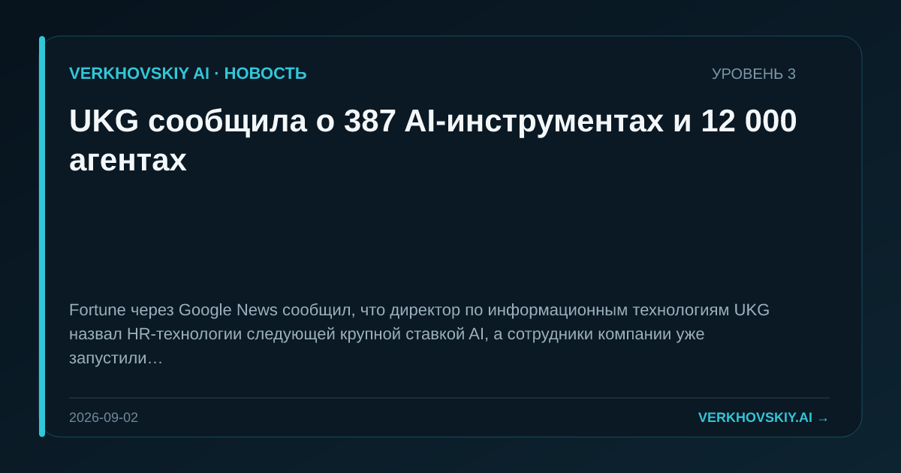

UKG сообщила о 387 AI-инструментах и 12 000 агентах
Fortune через Google News сообщил, что директор по информационным технологиям UKG назвал HR-технологии следующей крупной ставкой AI, а сотрудники компании уже запустили 387 AI-инструментов и более 12 000 агентов. Почему это важно: HR-платформа показывает внутреннюю массовую агентную автоматизацию как часть работы сотрудников. Это меняет профессиональную структуру: работник становится оператором множества микросистем, а не только пользователем одного приложения.